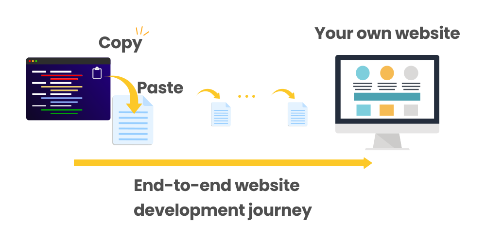
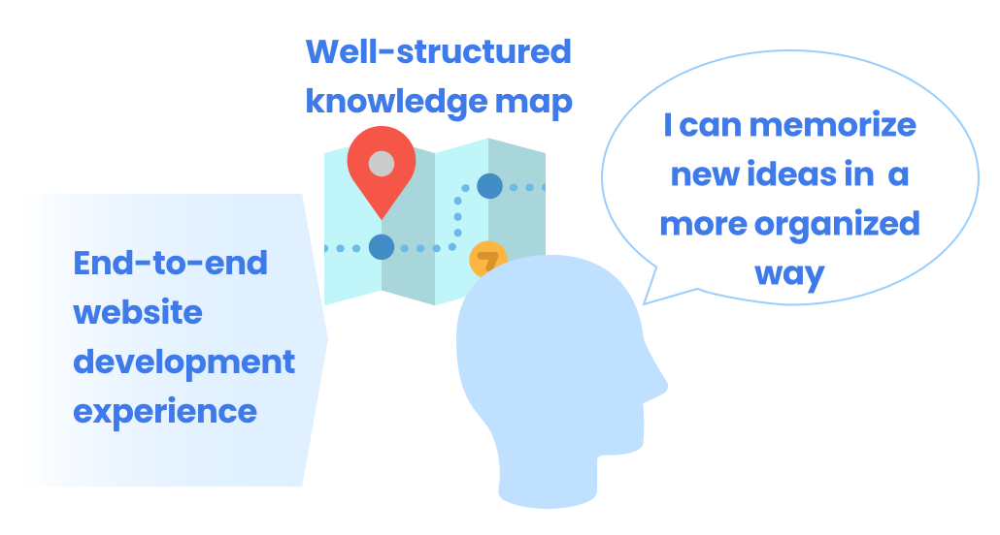
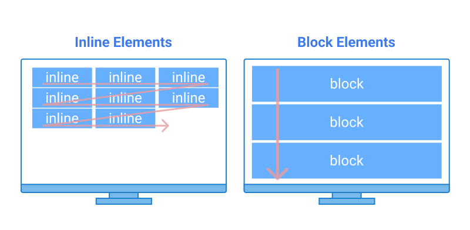
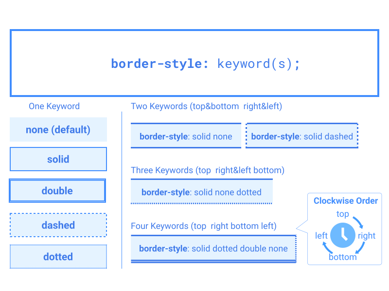

This course is designed for:
- Complete beginners of HTML and CSS coding.
-
Learners who want to build a solid foundation of HTML and CSS
skills.
-
Anyone who
wants to build and publish websites from scratch with your
own code.
How to use this course
Throughout this course, you will experience a
complete website development and publishing journey with
detail step-by-step guidance.
By the end of this course,
you'll build your own HTML and CSS practice website with
key HTML element and CSS property practice demos. You can use the
website to review what you learned.
The website will be mobile-friendly as you'll apply
responsive design.
At the end of this course,
your website will be online and accessible from anywhere with
computers and mobile devices.
Check the demo site
We'll provide all code snippets step by step along with
explanations of each HTML and CSS technique (syntax,
HTML tags ,and CSS properties) so that you can
learn theories and internalize them through practices.
This course is designed for a complete beginner. By simply
copying and pasting the code snippets into your text file,
you can build your own practice website very easily.

We recommend you go through the course
from the beginning to the end even with
50-80% of understanding first. Important thing is creating a
well-structured knowledge map in your brain first...

...and regularly review your unsure topics using the
history, bookmark, tag and
search features.
Course Outline
Chapter 1. Overview of Website Development
-
If you are a web coding beginner, you may not know the
mechanism of websites and key steps to develop a website.
-
In this chapter, you'll learn a high-level overview of
website development and basic terminologies.
Example Topic: Key Steps of Website Development
Chapter 2. Preparing for Website Coding
-
One of the biggest barriers for beginners to start coding is
preparing tools and having basic coding knowledge.
-
In this chapter, you'll learn how to start coding,
including required tool preparations such as Visual Studio
Code.
-
You'll also learn how to handle files and directories.
Example Topic: Absolute Path vs. Relative Path
Chapter 3. HTML Basics
-
HTML is used to structure a web page and provide content,
while CSS adds styles to the structure and content.
-
In this chapter, you'll learn the basics of HTML coding,
including syntax and how HTML tags and attributes work.
-
You'll also learn basic HTML tags such as <h1> to
<h6>, <p>, and various sectioning tags.
Example Topic: Headings and Paragraph
Chapter 4. HTML: Add Links and Images
-
A web page is connected to other pages through hyperlinks. An
HTML file for a web page is also linked to other resources,
such as images, videos, CSS files, and JavaScript files, to
add better content and functionality.
-
In this chapter, you'll learn how to add different types
of links.
Example Topic: Overview of Adding Links and Images
Chapter 5. HTML: Create Lists and Tables
-
In this chapter, you'll learn how to create lists and
tables.
-
To create lists or tables, you need to manage multiple tags,
such as <ul>, <ol>, <li> for lists, and
<table>, <tr>, <th>, <td> for tables.
Example Topic: Create Tables
Chapter 6. HTML: Create Forms
-
In this chapter, you'll learn how to create forms that
are used to obtain user inputs.
-
There are several form elements you need to learn, such as a
text input, check box, radio button, or select box.
Example Topic: Create Forms
Chapter 7: Bridging HTML and CSS
-
Several topics are not separable between the HTML and CSS
contexts. In this chapter, you'll learn intersectional
topics before start learning CSS, including:
- Inline element vs. block element
- Nesting structure
- Global attributes – Class, ID and style
Example Topic: Inline Element vs. Block Element

Chapter 8: CSS Basics
- CSS is used for adding styles to HTML elements.
-
In this chapter, you'll learn the basics of CSS,
including syntax, various CSS selectors, inheritance,
specificity, and reset CSS.
-
You can also learn about browser developer tools, which are
essential for web coding.
Example Topic: CSS Syntax
Chapter 9. Web Design Basics
-
How HTML and CSS form design elements differ from how drawing
software (illustrator, Figma, Sketch, Powerpoint, etc.) forms
design elements.
-
In this chapter, you'll learn how CSS controls website
design, including key design points, color code, and sizing
units.
Example Topic: CSS Key Design Points
Chapter 10. CSS: Sizing and Spacing
-
If you want to build a sophisticated, well-organized website,
you need to control sizing and spacing meticulously with a
correct understanding of each property (width, height, margin,
padding, box-sizing, etc.).
-
In this chapter, you'll learn the key concept of the CSS box
model, key CSS properties, and how each property affects each
other with illustrations.
Example Topic: How Margins Work
Chapter 11. CSS: Styling Text and Images
-
Text and images are two major content types on websites.
-
In this chapter, you'll learn how to style text and
images, including color, font-size, font-family, font-weight,
font-style, text-decoration, line-height, letter-spacing,
text-align, vertical-align, and float. You'll also learn
how to use web font.
Example Topic: Text Styling Properties
Chapter 12. CSS: Styling Backgrounds
- In this chapter, you'll learn background styling.
-
There are two ways to style the background of HTML elements.
One is adding color. The other is using images.
-
There are several approaches to specifying background colors
and customizing background images using CSS properties,
including:
- background-color
- background-image
- background-size
- background-repeat
- background-position
- background-attachment
- background (Multiple Properties)
Example Topic: Background Color
Chapter 13. CSS: Styling Boarders and Drawing Lines
-
In this chapter, you'll learn how to style borders and
draw lines.
-
Unlike with drawing software, you cannot draw lines using a
line tool or pen tool. You can draw a horizontal line using
the <hr> element but it is mainly used to semantically
separate sections. In website design, using border styling is
a commonly used approach to drawing lines.
-
There are several properties to styling boarders including:
- border-style
- border-color
- border-width
- border-radius
Example Topic: Border Style

Chapter 14. CSS: Layout - Key Concepts and Display Properties
-
Implementing an intended layout in a website may be one of the
most difficult parts of CSS coding.
-
The display property gives you flexibility in designing a
website layout. As the display property is multifunctional,
this property often confuses beginners.
-
Through this chapter, you'll be able to understand how
display property works.
Example Topic: Display Property
Chapter 15. CSS: Layout - Flex Box
-
Flex Box is one of the most important techniques in the modern
website layout approach.
-
Through this chapter, you can understand the concept of Flex
Box and how to use related properties such as:
- flex-direction
- flex-wrap
- justify-content
- align-items
- align-content
- align-self
- flex-grow
- flex-shrink
- flex-basis
Example Topic: Align Self
Chapter 16. CSS: Styling Lists
-
Styling lists is complicated as a list has a multilayer tag
structure with markers.
-
In this chapter, you'll learn basic approaches to styling
lists.
Example Topic: List Styling Properties
Chapter 17. Creating and Styling Components
-
In website development, you may reuse several design parts
(components), such as buttons, cards, and bars.
-
Mastering this concept will help improve your productivity of
website development by minimizing repetitive work while
improving your ability to customize website detail design.
-
In this chapter, you'll learn how to create and style
basic components.
Example Topic: Components and Layout
Chapter 18. Completing Website Development
-
In this chapter, you'll complete the entire website
coding, including different structures of web pages (home
page, list page, detail page) utilizing the components
prepared in the previous chapter.
-
For the coding practice, you'll use Live Server (VS Code
extension). Using the Live Server features, you can also check
how your website looks on your mobile devices during the
coding process.
Example Topic: Landing Page Development
Chapter 19. Publishing Websites
-
In this chapter, you'll learn key steps to publish
websites including basic domain and DNS knowledge.
-
We will give you step-by-step guidance to publish your website
using GitHub Pages, which is one of free website hosting
services.
-
You'll also learn how to add a favicon to your website.
Example Topic: GitHub Pages
Chapter 20. Supplemental Topics
-
In this last chapter, we'll cover some basic topics, including
the <hr> and <br> elements, reserved characters,
non-breaking space.